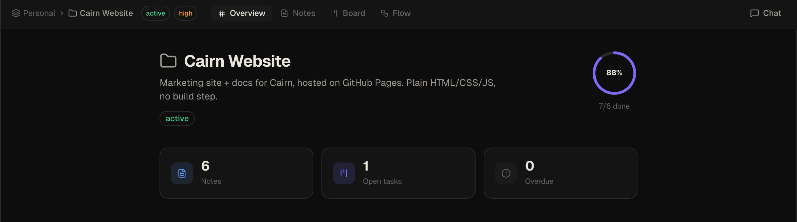

Getting Started
Install Cairn, choose a workspace folder, create your first project, and connect an AI endpoint. This page gets you from zero to working in a few minutes.
What is Cairn?
Cairn is a local-first project management application that runs on your machine. It combines a markdown notes editor, a kanban board, and an AI chat panel into a single desktop app. All data is stored as a SQLite database and plain .md files in a folder you choose — nothing is sent to external servers by Cairn itself.
Key properties:
- No account or sign-up required
- No cloud storage — your data stays on your machine
- Works completely offline (AI features require a local or remote endpoint you configure)
- Plain markdown files you can read and edit outside Cairn
- Bundled MCP server for connecting external AI clients
System requirements
- macOS 12 Monterey or later
- Windows 10 or later (x64)
- Linux (x64 or arm64, AppImage)
Download & install
- Go to the Releases page on GitHub
- Download the installer for your platform:
.dmgfor macOS ·.exefor Windows ·.AppImageor.debfor Linux - Open the installer and follow the standard install flow for your OS
- Launch Cairn
First launch: choosing a workspace
On first launch, Cairn will prompt you to choose a workspace folder. This is the root directory where all your data will live:
- A
cairn.dbSQLite database - A
notes/folder containing one.mdfile per note, organised by project
You can choose any folder — a new empty folder, an existing folder, or a folder inside iCloud Drive, Dropbox, or a git repository for automatic portability and backup.
If the folder you pick contains a .obsidian directory, the workspace step shows an "Obsidian vault detected" hint, and after import the wizard summarises the projects it found (with note counts) instead of asking you to create your first project from scratch. See Workspace & Files for the full vault-import story.
First-run setup is five short steps — choose folder, workspace, appearance (theme, text size, accent colour and note font), AI, then you land in the app. MCP configuration, embeddings and view visibility are no longer part of the required flow; they all live in Settings (Extensions, Embeddings, and General → View visibility). You can change the workspace folder later in Settings → General.
Creating your first project
- In the left sidebar, click the + button next to Projects
- Enter a project name and choose an icon
- Click Create
The project opens to its Overview. Each project has an Overview (⌘1), Notes (⌘2), Board (⌘3) and Idea Flow (⌘5), alongside the other views in the sidebar. The five default board columns — Backlog, Todo, In Progress, Review, Done — are created automatically.

Creating a note
- Select your project in the sidebar
- Click Notes in the top nav
- Click the + button to create a new note
- Type in the editor — it renders markdown live in the split pane
The note is saved as notes/<Project>/<Title>.md in your workspace folder immediately.
Editor features
- Syntax highlighting for 100+ languages in fenced code blocks
- Mermaid diagrams render inline — flowcharts, sequence diagrams, ER diagrams, Gantt charts, and any diagram type supported by Mermaid v11. Click the ⤢ icon on any diagram to open it full-screen.
- Table of contents auto-generated from headings — click any entry to jump to that section
- AI text actions on any selection: Rephrase, Summarize, Expand, Fix Grammar, Change Tone, Custom
- Find inside a note with ⌘F (Ctrl+F) — match highlighting, next/previous, match case and whole word. Global search shows excerpts around each match and understands "exact phrases" and -excluded words.
- Pin notes to the top of the list
- External edits to the
.mdfile sync back automatically via file watcher
Creating a task
- Select your project and click Board
- Click + Add card at the top of any column
- Enter a title. Optionally add a description, priority, and due date.
- Press Enter or click outside to save
Drag cards between columns to move them through your workflow. For WIP limits, task dependencies, tags, archive, cross-project moves, and the card detail view, see the Board reference.
Using Idea Flow
Each project has an Idea Flow view alongside Notes and Board. Idea Flow is a freeform canvas where you can arrange ideas spatially, link them to existing notes and tasks, and explore connections before committing to structure.
- Double-click the canvas to create an idea node
- Drag from any node handle to create an edge between nodes
- Drag notes or tasks from the sidebar panel onto the canvas to create reference nodes
- Right-click any node to promote it to a board task, summarise its upstream subgraph with AI, or delete it
- Click Auto-layout in the toolbar to arrange nodes automatically
For the full reference — node types, group nodes, AI Summary, MCP tools, and keyboard shortcuts — see Idea Flow.
Running a coding agent
The Agent view (⌘6 with the default view order) supports two modes — the built-in Cairn Agent, which runs on Cairn's own agent engine, and external CLI binaries like Claude Code or OpenCode.
Using the built-in Cairn Agent
- Open the project Overview and set a code directory — the folder the agent will read and write
- Open a task card on the Board and click Spawn Agent → Cairn Agent, or go to the Agent view, click +, and choose Cairn Agent
- Enter a prompt (pre-filled from the card if spawned from one) and confirm
The agent streams tool activity as live chips in the chat. It reads files, writes code, runs commands, and keeps your board and notes updated automatically. The agent supports dynamic Plan and Execute modes and interactive confirmations for modifying actions. No extra setup — it uses the AI endpoint you configured in Settings → AI → Chat.
Using an external agent binary
- Go to Settings → AI → Coding Agents and add an agent — give it a name, the path to the binary (e.g.
/usr/local/bin/opencode), and any args - Open the project Overview and set a code directory
- Open a task card on the Board and click Spawn Agent, or go to the Agent view and click +
The agent runs in a live xterm.js terminal. Browse files in the tree, open and edit them in the editor, and review changes in the Diff tab — all without leaving the view.
For the full reference see Agent Workspace.
Connecting an AI endpoint
Cairn works with any OpenAI-compatible API endpoint, and can also talk to the OpenAI Responses and Anthropic Messages APIs — each saved provider picks its protocol, and the picker shows which ones your provider offers for the chosen model. You can use a remote service or a model server you run yourself. Cairn does not bundle its own LLM engine (removed in 3.0.4): run Ollama, LM Studio or llama.cpp yourself and add it as a local server.
Using a local server (Ollama, LM Studio, llama.cpp)
- Start your local server (Ollama, LM Studio or llama.cpp)
- Open Settings → AI → Chat → Local servers and let Cairn detect servers on the usual ports (11434, 1234, 8080) — they are registered as saved providers, with no API key needed for localhost
- Pick the model to use for chat, the agent and inline AI
Using OpenAI
- Open Settings → AI → Chat
- Set the endpoint to
https://api.openai.com - Enter your OpenAI API key
- Choose a model (e.g.
gpt-4o)
Using Ollama (local, no API key)
- Install Ollama and pull a model:
ollama pull llama3.2 - In Cairn, go to Settings → AI → Chat
- Set endpoint to
http://localhost:11434 - Leave the API key blank
- Enter the model name, e.g.
llama3.2
Using LM Studio (local, no API key)
- Open LM Studio and start the local server (default: port 1234)
- In Cairn, set endpoint to
http://localhost:1234 - Leave the API key blank
- Enter the model name shown in LM Studio
During first-run setup you can also install a ready-made provider from the community preset gallery (OpenRouter, Ollama, Mistral and friends) — keyless providers install in one tap; others ask for your API key, which is stored in your OS keychain.
Once configured, open the chat panel with ⌘/ (macOS) or Ctrl+/ (Windows/Linux) and send your first message.
Quick capture and the command palette
Press ⌘⇧Space (Ctrl+Shift+Space on Windows/Linux) from any app, or choose Quick capture… in the tray menu, to bring up a small dialog that adds a card to a project's Backlog (or To Do) or creates a note. ⇧↵ saves and keeps the dialog open for the next item. Inside Cairn, ⌘K opens the command palette for search and navigation.
Customising the app
Theme and font size are available from the quick settings icon (⚙) in the top-right corner of every view — no need to open Settings. You can also find them in Settings → General:
- Theme — Dark, Light, or System (follows your OS preference)
- Accent colour — ten curated presets (Sage Moss, Cairn Teal, Terracotta, Amber Gold, Obsidian Indigo, Slate Blue, Rust Coral, Deep Plum, Pine Green, Copper Bronze), each tuned for light and dark, applied across the whole app. Your choice persists and even tints the launch splash.
- Font size — scale the UI from XS to XL. The preference persists across sessions.
- Note font — Sans (default), Serif or Mono for note text; the editor, preview and PDF exports all follow it while the UI chrome stays on the system font.
- Chat theme — re-skin the chat surface with built-in themes (Default, Paper, Terminal, Midnight, Aurora) or community themes.